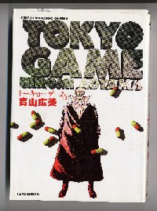
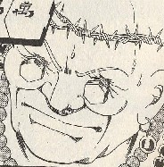
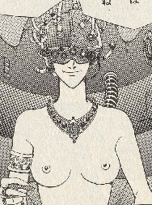
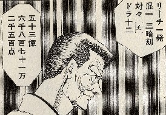
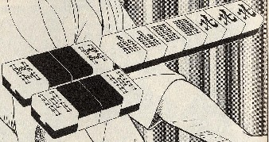
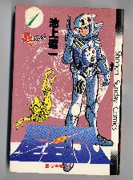

青山広美といえば、 平成12年度のコミック大賞を受賞した名作「バード」の作者。その青山氏が、平成５年だったか６年に近代麻雀（だったかな？）に連載したのが、この「トーキョーゲーム」。実はバードに負けず劣らずの傑作。

近未来の東京にゴルゴダ・タワーと呼ばれるビルがあって、全階、麻雀バクチ場となっている。その最上階には椅子の男と呼ばれる男がいて、最上階で不老不死のクスリ「ハレルヤ」を製造している。
青い☆(星)と呼ばれる主人公が、各階でフロアマスターを倒しながら最上階にたどり着き、ついには椅子の男を倒すというストーリー。
最上階にたどりつくまで、ボス・キリスト、ゴッドウルフ、サイバネテック・ローザ、パパ・エデン、サムライなどのフロアマスターと麻雀バトル。フロアマスターはいずれも個性的なキャラクターだが、キャラクターそのものはボス・キリストとサイバネテック・ローザが好み。
ボス・キリスト サイバネテック・ローザ
 
もちろん二人のうちどちらといえばサイバネテック・ローザ。なんと云っても必然性がないのにヌードなのがいい。(^-^； 脳がコンピュータと連結されており、あらゆるデータを分析して勝ち進む。しかし最後には、青い星の感性の前に敗北する。
フロアマスター最後の大物、サムライ編は、青天井麻雀。青い星がケガのために、同行者が代打ちする。しかしサムライに大物手を決められ、ラス前を迎えたところで60億点のビハインド。

これがその手

そこへ青い星が戻る。サムライが、「もう大勢は決まっている」と告げる。すると「60億だろうが600億だろうが、人は点棒によって敗れるのではない」。おおかっこいい。
しかしそんなこと云ったって60億の差、たった１局でどうするのか。するとそこで青い☆がアガったのが、リーチ・牌底・小三元・混一・混老・対々・三暗刻・三槓子・南・ドラ32。3,783,023,686,900,000,000点。これでは分かりにくいので日本語に直すと378京３千23兆6869億点。
きっと青天井でも、これが最高点なんだろな（役満貫は、１千万点で打ち切りというルール）。プラスするとしたらダブリーの一翻くらいか（リーチしてから３回、槓する）。
そんな面白いコミックだったが、なぜかあまり売れなかった（ようだ）。そこで発行部数も少なかった（ようだ）。理由はまったく知らないけれど、少々内容がおどろおどろしかったせいかもしれない。
実はこの不老不死薬「ハレルヤ」、原料は人間の内蔵。バードの最初の方で、ヘビが２流のイカサマ師を殺したあげく、畑の肥料にしてしまう場面がある。これがおどろおどろしいというので、掲載紙が回収されたとかなんとかいう話を聞いた。
しかし「トーキョーゲーム」のハレルヤ製造現場は、そのバードの肥料場面がかわいくみえるほど。傑作と思ったが、発行部数が少なかったのは、そんなことが原因かも知れない（なにせ巻末で、作者自身が「かくも無謀な漫画を許してくれた編集のetc」と述べているくらい）。
＃トーキョーゲームをはじめて読んだとき、池上遼一の星雲児を思い出した。

星雲児も不老不死薬「ダナピア」がテーマの一つにになっている。ただ「ダナピアは人間の死に際しての生命エネルギーが原料。そこでトーキョ−ゲームほどのおどろおどろしい場面は出てこない。
|